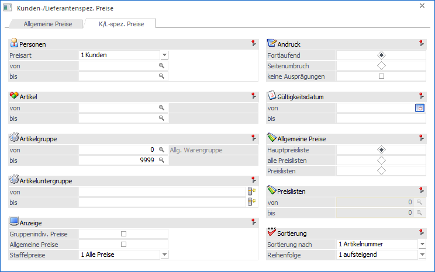
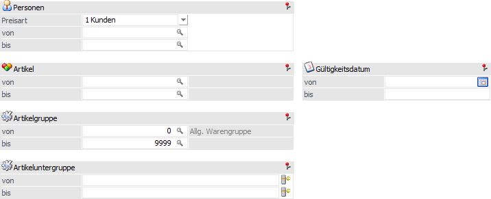
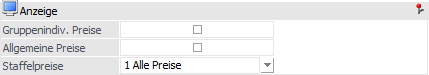
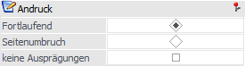
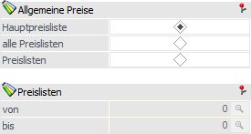
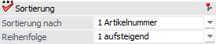
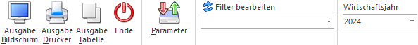

Im Menüpunkt…
1 WinLine FAKT
1 Auswertungen
1 Artikellisten
1 Preislisten
… können alle angelegten Preislisten übersichtlich auswerten werden. Hierbei unterteilt sich das Fenster ist die folgenden Register:
ü Register "Allgemeines Preise"
In
dem Register "Allgemeine Preise" werden die allgemeinen Preise (d.h. keine
gruppenspezifischen oder kunden- / lieferantenspezifische Preise)
ausgewertet.
ü Register "K/L-spez. Preise
(aktuelles Register)
In dem Register "K/L-spez. Preise" werden alle
angelegten kunden- bzw. lieferantenspezifischen Preislisten auswertet.
Register "K/L-spez. Preise"

In dem Register "K/L-spez. Preise" werden alle angelegten kunden- bzw. lieferantenspezifischen Preislisten auswertet.
Selektion

Ø Personen
Zunächst kann per Auswahlliste definiert werden, was für Preise ausgewertet werden sollen. In der darauffolgenden "von / bis"-Selektion kann auf diese Preisart eine Einschränkung erfolgen.
Ø Artikel von / bis
An dieser Stelle können die Artikel für die Ausgabe der Preisliste hinterlegt werden.
Ø Artikelgruppe von / bis
In diesen Feldern kann nach den Artikelgruppen eingeschränkt werden, welche in der Preisliste berücksichtigt werden sollen.
Ø Artikeluntergruppe von / bis
An dieser Stelle kann nach den Artikeluntergruppen eingeschränkt werden. Bleiben die Felder leer, so werden alle Artikel aller Artikeluntergruppen in der Preisliste berücksichtigt.
Ø Gültigkeitsdatum
Durch Eingabe einer Gültigkeit werden nur all jene Preislisteneinträge ausgewertet, welche innerhalb des Gültigkeitsbereichs liegen.
Anzeige

Ø Gruppenindiv. Preise / Allgemeine Preise
Wenn in dem Feld "Preisart" Kunden oder Lieferanten auswählt wurde, so sucht die Auswertung zunächst einmal nach den kunden- bzw. lieferantenspezifischen Preisen. Sind diese nicht vorhanden und ist eine der beiden Optionen aktiviert, so wird einem anderen gültigen Preis für den Kunden / Lieferanten gesucht. Werden beide Optionen aktiviert, so würde dieses bedeuten, dass die gruppenindividuellen Preise eine höhere Priorität haben, wie die allgemeinen Preise. D.h. erst wenn kein gruppenindividueller Preis vorhanden ist, so wird der allgemeine Preis verwendet.
Wenn in dem Feld "Preisart" Kundengruppen oder Lieferantengruppen auswählen wurde, besteht die Möglichkeit die Option "Allgemeine Preise" zu aktivieren. D.h. wird kein gruppenspezifischer Preis gefunden, so würde der allgemeine Preis ausgegeben werden.
Ø Staffelpreise
An dieser Stelle kann definiert werden, ob "1 - Alle Preise", "2 - Nur Staffelpreise" oder "3 - Keine Staffelpreise" ausgegeben werden sollen.
Andruck

Ø Fortlaufend / Seitenumbruch
An dieser Stelle kann definiert werden, ob nach jedem Kunden / Lieferanten / Gruppe ein Seitenumbruch erfolgen soll.
Ø keine Ausprägungen
Wird diese Option aktiviert, so werden keine Ausprägungen ausgegeben. D.h. auch wenn Ausprägungen einen eigenen Preisstamm haben, so werden diese nicht ausgegeben; es wird nur der Hauptartikel gedruckt.
Preise

Ø Allgemeine Preise
Mittels Auswahl kann entschieden werden, ob die Hauptpreisliste (Preisliste aus dem Personenkontenstamm), alle Preislisten oder ein bestimmter Preislistenbereich auswertet werden sol.
Ø Preislisten von / bis
Wurde in der Auswahl "Allgemeine Preise" die Variante "Preislisten" gewählt, so kann hier eine Einschränkung auf die Preiselisten erfolgen.
Sortierung

Ø Sortierung nach
An dieser Stelle kann die Sortierungsvariante für die Ausgabe gewählt werden.
Ø Reihenfolge
Mit Hilfe der Einstellung "Reihenfolge" kann definiert werden, ob das Sortierkriterium auf- oder absteigend berücksichtigt werden soll.
Buttons

Ø Ausgabe Bildschirm
Mit Hilfe des Buttons "Ausgabe Bildschirm" oder der Taste F5 wird die Auswertung am Bildschirm ausgegeben.
Ø Ausgabe Drucker
Durch Anwahl des Buttons "Ausgabe Drucker" wird die Auswertung am Drucker ausgegeben.
Ø Ausgabe Tabelle
Bei der Anwahl des Buttons "Ausgabe Tabelle" wird die Preisliste in Form einer WinLine Tabelle dargestellt (nähere Informationen entnehmen Sie bitte dem Kapitel Preislisten Tabelle).
Ø Ende
Durch Drücken des Buttons "Ende" bzw. der Taste ESC wird das Fenster geschlossen.
Ø Parameter
Die vorgenommenen Einstellungen können durch Anklicken des Buttons gespeichert bzw. geladen werden (nähere Informationen entnehmen Sie bitte dem Kapitel Voreinstellung Preislisten).
Ø Filter bearbeiten
Durch Anklicken des Buttons "Filter bearbeiten" können die Preislisten nach frei definierbaren Kriterien eingeschränkt werden.
Ø Wirtschaftsjahr
Über die Auswahlbox kann das Wirtschaftsjahr gewählt werden, für welches die Auswertung erfolgen soll. Damit können die Daten aus den Vorjahren angezeigt werden, ohne dass das Fenster geschlossen und ein manueller Wirtschaftsjahreswechsel vorgenommen werden muss.